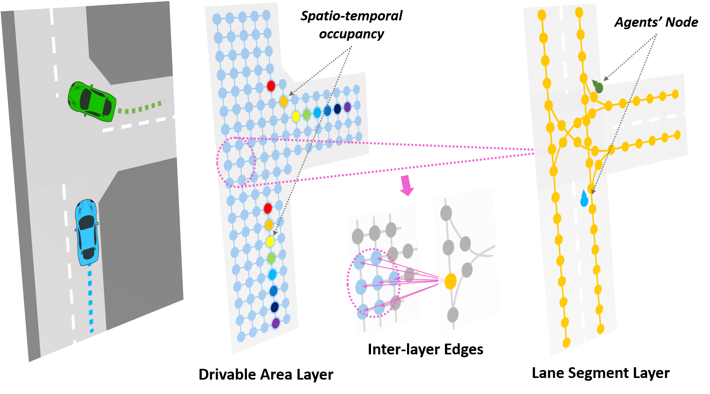
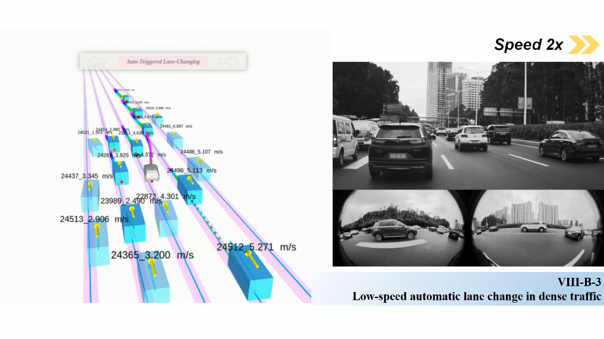
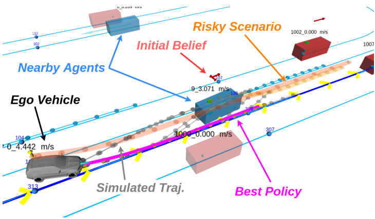
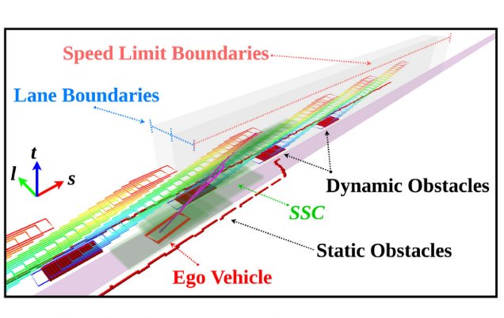

Lu Zhang - 張 魯
I'm a Ph.D. candidate at the Aerial Robotics Group, CHENG KAR-SHUN Robotics Institute, Hong Kong University of Science and Technology (HKUST), supervised by Prof. Shaojie Shen. I received my B.Eng. and M.Eng. in Automation from the Integrated Navigation and Intelligent Navigation (ININ) Lab, Beijing Institute of Technology, in 2015 and 2018, supervised by Prof. Yi Yang. My research includes motion prediction, decision-making and motion planning for autonomous vehicles.
Contact: lzhangbz AT ust DOT hk / louiszhang5 AT gmail DOT comPublications

Trajectory Prediction with Graph-based Dual-scale Context Fusion
Lu Zhang, Peiliang Li, Jing Chen and Shaojie Shen
arXiv preprint arXiv:2111.01592, 2021
[arXiv]
[code]
[video]

EPSILON: An Efficient Planning System for Automated Vehicles in Highly Interactive Environments
Wenchao Ding*, Lu Zhang*, Jing Chen and Shaojie Shen
IEEE Transactions on Robotics (T-RO), 2021
[IEEE]
[arXiv]
[code]
[video]

Efficient uncertainty-aware decision-making for automated driving using guided branching
Lu Zhang*, Wenchao Ding*, Jing Chen and Shaojie Shen
IEEE International Conference on Robotics and Automation (ICRA), 2020
[IEEE]
[arXiv]
[code]
[video]

Safe Trajectory Generation for Complex Urban Environments Using Spatio-Temporal Semantic Corridor
Wenchao Ding*, Lu Zhang*, Jing Chen and Shaojie Shen
IEEE Robotics and Automation Letters (RA-L), 2019
[IEEE]
[arXiv]
[code]
[video]
Service
- Reviewer for IEEE Transactions on Robotics (T-RO), 2021
- Reviewer for IEEE/RSJ International Conference on Intelligent Robots and Systems (IROS), 2021
- Reviewer for IEEE International Conference on Robotics and Automation (ICRA), 2020